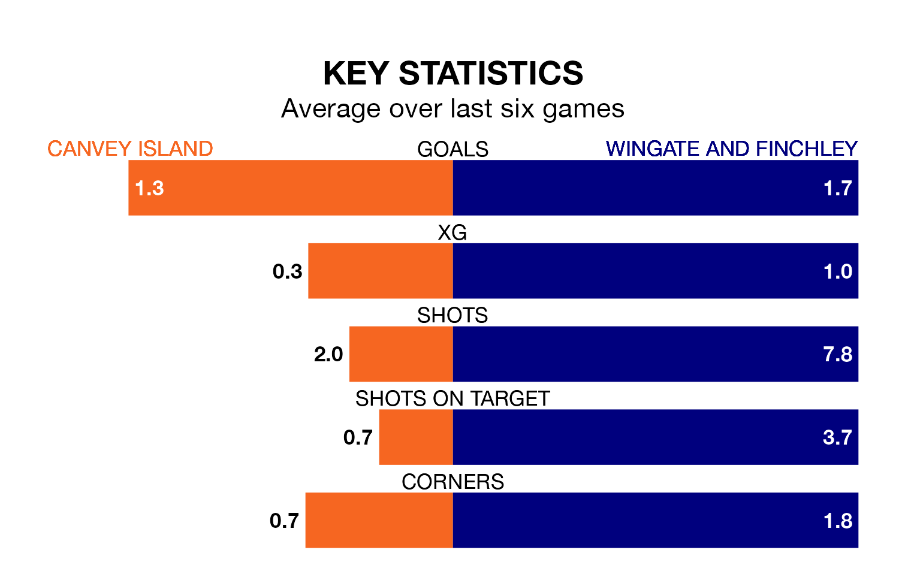

Wingate and Finchley face Canvey Island on Saturday seeking to protect their long unbeaten run in the Isthmian Premier Division.
The Blues are unbeaten in five, with two wins and three draws, ahead of the 3pm kick-off.
They face a Canvey Island team who have won one and drawn two over the same number of games.
With 58 goals in 31 games so far this season, Wingate & Finchley are scoring more than average in the league with 1.9 goals per game. But they are conceding more than average too, letting in 52 goals at a rate of 1.7 per game.
Canvey Island, meanwhile, are below average scorers, with 1.5 goals per game, compared to a league average of 1.6. They have conceded 1.9 goals per game.
In the last 10 years, Canvey Island and Wingate & Finchley have played each other on nine occasions. Canvey Island won five of them and Wingate & Finchley four.
On average, the Gulls scored 1.6 goals and the Blues 2.2 in those matches.
Their last meeting was on October 21, when Wingate & Finchley won 6-2 at home.
The Blues are fifth in the table after 31 games, of which they have won 16 and drawn five, earning 53 points.
The Gulls are 10 places behind the away side in 15th, with 12 wins and four draws putting them on 40 points.
Canvey Island's last match was on March 2, a 2-2 draw against Lewes.
Wingate & Finchley drew 2-2 with Enfield Town last time out, on February 24.
Updated: 09:34 (UTC), 08/03/24